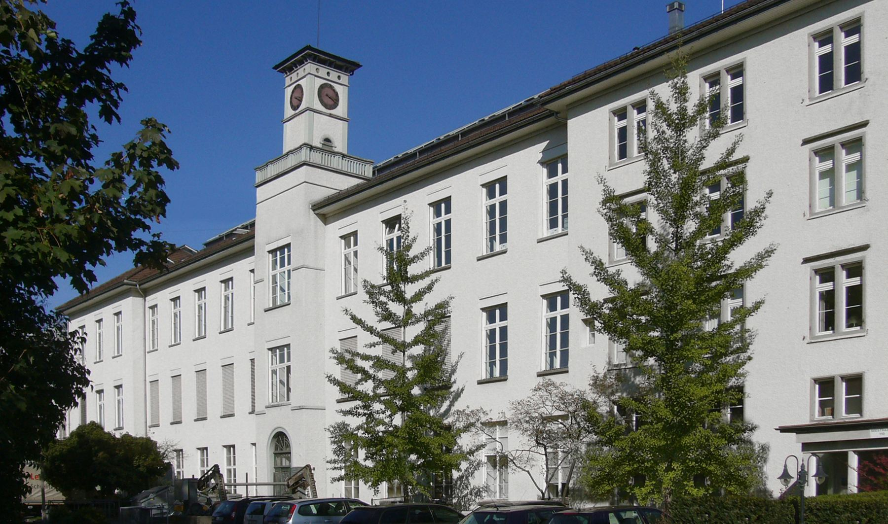
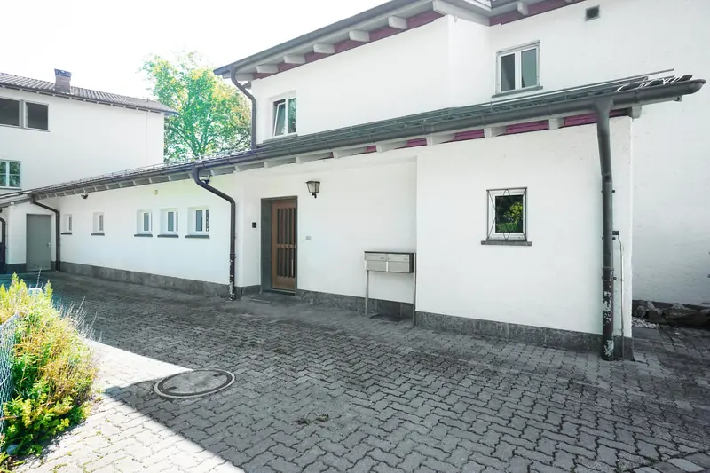

30 Jahre apb architekten
Seit der Gründung 1996 durch Peter Brader hat das Büro mehr als 100 Projekte für private und öffentliche Bauherren realisiert. Seit 2011 führen Pia Kiebel und Thomas Schinkhof die apb architekten ag.
Zur ChronikWir sind ein Dienstleistungsunternehmen für Architektur und Baumanagement – und verstehen unsere Tätigkeit als integralen, interdisziplinären Prozess auf der Suche nach der architektonisch anspruchsvollen und funktional sinnvollen Lösung.
gegründet von Peter Brader, seit 2011 im Besitz von Pia Kiebel und Thomas Schinkhof
realisierte Projekte aus dem öffentlichen und privaten Sektor
geplante und beaufsichtigte Handwerkerleistungen
Schulhaus- und Kindergartenprojekte
Von der Gründung in Uster bis zum ersten Kinderhospiz der Schweiz: drei Jahrzehnte Architektur im Zürcher Oberland und darüber hinaus.
Seit der Gründung 1996 durch Peter Brader hat das Büro mehr als 100 Projekte für private und öffentliche Bauherren realisiert. Seit 2011 führen Pia Kiebel und Thomas Schinkhof die apb architekten ag.
Zur Chronik
Im 2-jährigen Rhythmus bilden wir Zeichner/-innen Fachrichtung Architektur aus. Die Bewerbungsgespräche für den Lehrbeginn im August 2028 finden im Juli bis September 2027 statt.
Zur Lehrstelle
Im Untergeschoss des Schulhauses Pünt wurden Hort, Küche und Eingangsbereich umgebaut und saniert. Die Ausführung erfolgte von Februar bis August 2026 in Etappen.
Zum ProjektVom Terrassenhaus bis zur S-Bahnstation: Unsere Projekte nach Nutzung – fahren Sie über ein Thema.
Neubauten, Umbauten und Erweiterungen – für Wohnen, Bildung, Verwaltung, Pflege und die SBB.
Termin- und budgetgerechte Realisierung nach dem Leistungsmodell SIA 112 – nichts wird dem Zufall überlassen.
Fachkenntnis aus über 100 Projekten – für Bauherren, Investoren und Käufer von Stockwerkeigentum.
Wir suchen kontinuierlich Menschen, die sich genauso wie wir für Architektur und Baumanagement begeistern – in einem loftartigen Studio nahe dem Naturschutzgebiet Greifensee.